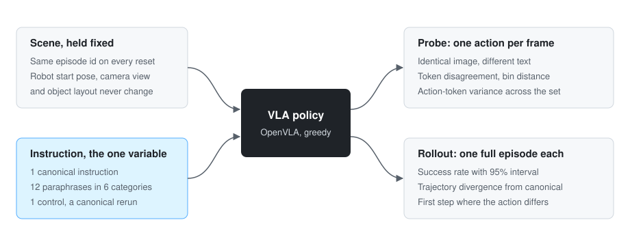

Instruction-phrasing brittleness in vision-language-action models
Vision-language-action policies such as OpenVLA are built on pretrained vision-language models that handle paraphrase well. "Put the spoon on the towel" and "place the spoon on the towel" name the same task, so a policy that kept its backbone's language ability should act the same way for both. I test whether it does. The scene, camera and robot state are held fixed in SimplerEnv and only the instruction text changes, so any difference in behaviour can be traced to wording and not to perception or control.
